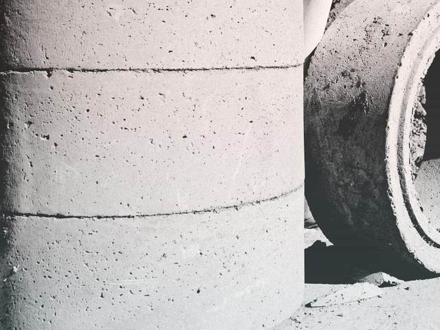
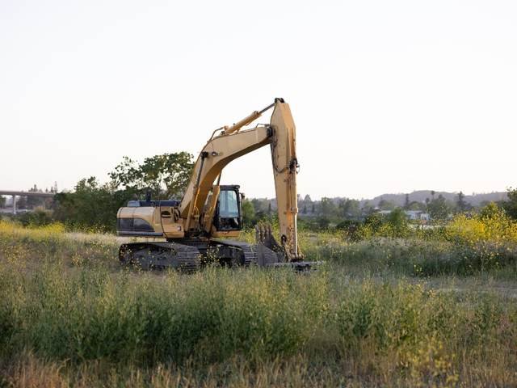
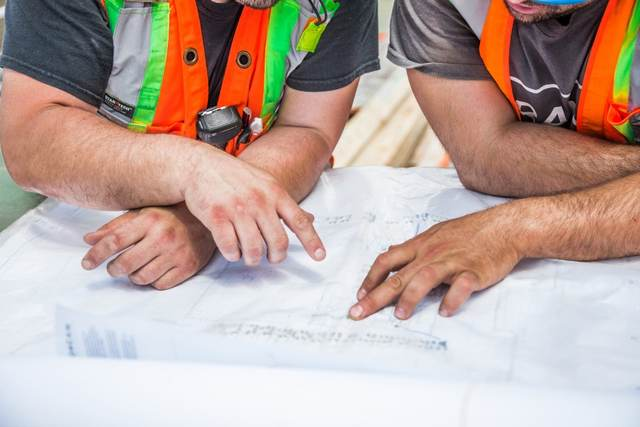

この写真のまま使えます（差し替えも自由）
この写真のまま使えます（差し替えも自由）道路工事
県道・市道の新設から改良・維持補修まで。交通量の多い現場での安全管理と、供用しながらの段階施工を得意としています。
昭和58年の創業以来、さいたま市を中心に、道路と河川の整備に携わってきました。完成すれば当たり前になる。その当たり前を、私たちがつくっています。
道路・河川・上下水道・造成を中心に、公共工事から民間の工事まで手がけています。新しくつくる仕事と、いま在るものを直す仕事の両方をお引き受けしています。
この写真のまま使えます（差し替えも自由）県道・市道の新設から改良・維持補修まで。交通量の多い現場での安全管理と、供用しながらの段階施工を得意としています。

護岸工事、河道掘削、農業用水路の改修。令和元年東日本台風では、発災の翌日から復旧工事にあたりました。

配水管の布設・更新工事。生活に直結するライフラインを、断水させずに切り替える技術と段取りがあります。

工場用地・宅地の造成、法面工、擁壁工。舗装の打ち替えや構造物の補修など、小さな工事もお受けします。
創業以来、地域の公共工事を積み重ねてきました。同じ現場を、20年後にもう一度直す。その繰り返しが、私たちの技術になっています。
令和元年東日本台風では、発災の翌日から現場に入りました。重機とオペレーターを自社で抱えているから、緊急の要請にも即応できます。
舗装の一部、側溝の入れ替え、構造物の補修。小さな工事ほど頼み先を探すのが大変だと思っています。近くにいるので、すぐ見にいけます。

代表者・社員の写真が入ります当社は昭和58年の創業以来、さいたま市を中心に、道路と河川の整備に携わってまいりました。
土木の仕事は、完成すれば当たり前のように使われ、やがて誰にも意識されなくなります。橋を渡るとき、蛇口をひねるとき、そこに工事があったことを思い出す人はいません。しかし、その当たり前を支えているという誇りが、私たちの仕事の芯にあります。
近年は、担い手の減少という業界共通の課題に直面しています。だからこそ当社は、若い人が安心して技術を身につけられる会社であろうと考えています。分からないことを、分からないと言える現場を守ること。それが、次の時代をつくる仕事だと思っています。
| 商号 | 杜建設株式会社 |
|---|---|
| 代表者 | 代表取締役 杜 太郎 |
| 所在地 | 〒330-0000 埼玉県さいたま市大宮区○○町1-2-3 |
| 電話／FAX | 048-000-0000 ／ 048-000-0001 |
| 設立 | 昭和58年4月 |
| 資本金 | 2,000万円 |
| 従業員数 | 約30名（技術者を含む） |
| 建設業許可 | 埼玉県知事許可（般-3）第00000号 土木工事業／とび・土工工事業／舗装工事業／水道施設工事業 |
| 有資格者 | 1級・2級土木施工管理技士、1級舗装施工管理技術者 在籍 |
| 主要取引先 | 埼玉県／さいたま市／○○市 |
| 加盟団体 | （一社）埼玉県建設業協会 |
最初は、誰も分かりません。 分からないと言える現場です。
入社してすぐに、重機は動かせません。図面も読めません。それでいいと思っています。先輩と一緒に現場を回り、道具の名前を覚えるところから始めてください。資格は、会社が費用を出して取ってもらいます。
 社員・現場の写真が入ります
社員・現場の写真が入ります| 募集職種 | 土木施工管理技士／土木作業員 |
|---|---|
| 仕事の内容 | 公共工事の現場で、工程・安全・品質の管理を担当していただきます。未経験の方は、先輩と一緒に現場を回るところから始めます。 |
| 応募資格 | 要普通自動車免許。未経験・資格なしでも歓迎します。学歴は問いません。 |
| 給与 | 月給◯◯◯,◯◯◯円〜◯◯◯,◯◯◯円（経験を考慮のうえ決定） 賞与年2回／各種手当あり |
| 勤務時間 | 8:00〜17:00（休憩60分） 平均残業時間 月20時間程度 |
| 休日・休暇 | 年間休日105日（日曜・祝日・第2土曜） 夏季・年末年始・有給休暇（年5日以上の取得義務） |
| 待遇 | 各種社会保険完備／資格取得支援（受験費用は全額会社負担）／退職金制度／資格手当 |
| 応募方法 | お電話またはメールにてご連絡ください。まずは会社見学だけでも構いません。 |
工事のご相談、採用のお問い合わせは、お電話またはメールにてお気軽にご連絡ください。